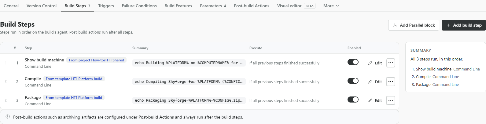

Steps shared from a project or template
A project or a template can hold build steps that every build configuration under it gets. You can override or switch off a shared step in one build configuration without touching the others.
When to use it
Use shared steps when many build configurations do the same work, for example the same Unity build for Windows, PS5 and Xbox. Write the steps once in the project (the settings home) or in a template. See Projects, Settings homes and Templates.
How to set it up
- Open the project (or the template) and click Settings › Build Steps.
- Add the steps with Add build step and click Save.
- Open a build configuration under it and click Settings › Build Steps. The shared steps are in the list, tagged From project Game, From template … or From Root project.
- To change a shared step for this build configuration only, click Override, change the fields and click Save. The row now says Overridden.
- To switch it off here, click Disable in this build configuration.
- To go back, click Reset to inherited. The step is then as the project or template defines it.

Every option
| Action | What it does | Default | Example |
|---|---|---|---|
| Override | Copies the shared step into this build configuration so you can change it. Other build configurations keep the shared version. | Not overridden | Change the Unity build method for one platform |
| Edit override | Opens the overridden step again. | ||
| Disable in this build configuration | Skips the shared step here. It stays enabled everywhere else. | Enabled | No Steam upload in the test build configuration |
| Reset to inherited | Throws away the override and gives the step back as the project defines it. | ||
| Disabled above | The step was switched off higher up. |
A worked example
The project HT1 Shared holds the steps Compile and Package. HT1 Windows Build uses both. HT1 PS5 Build overrides Package to add the console tool and keeps Compile as it is. When you change Compile in the project, both build configurations get the change. Package in the PS5 build stays as overridden until you click Reset to inherited.
What you see when it runs
A shared step runs like any other step, in the order of the list. The console block carries the step name, and the build page shows it in the Build steps card with the others.
Problems and fixes
| Problem | What to do |
|---|---|
| A shared step does not show in a build configuration | Check that the build configuration is inside the project, or uses the template. |
| You changed the project and one build configuration did not change | That build configuration overrides the step. Click Reset to inherited there. |
| A shared step has no edit option | It belongs to the project. Edit it in the project, or use Override. |